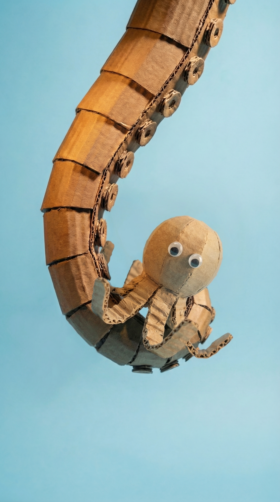

No nicho animal artesanal informativo você cria imagens com inteligência artificial que parecem feitas a mão e cria roteiros envolta de fatos interessantes sobre o mundo animal.
É um nicho específico, portanto, lembre-se: Você pode adaptar cada um dos pilares desse nicho para criar a sua própria versão original. Modelar é sempre melhor que copiar.
Procure um fato animal bizarro que tenha 3 ingredientes:
Use o Claude para gerar ideias de temas:
Cada bloco tem uma função específica na retenção do espectador:
Quebre uma expectativa em 2 frases.
Estabeleça por que isso é impressionante. Mostre o perigo ou o absurdo.
Prenda o cérebro do espectador com uma pergunta que precisa de desenvolvimento.
Traga credibilidade. Data, fonte, detalhe específico.
Entregue o comportamento bizarro em camadas, do mais simples ao mais impressionante. Inclua o paralelo humano no final — é aqui que o vídeo viraliza.
Pense em cada frase do roteiro como uma cena de papelão. Não ilustre o texto literalmente.
Fórmula: fato científico → como representar de modo claro e divertido? → construir essa cena com papelão.
O estilo é Cardboard Cinema: dioramas artesanais feitos à mão com papelão corrugado real. O charme está na imperfeição, na textura visível, no feito à mão.
Macro photography com profundidade de campo rasa (bokeh), iluminação quente e direcional, formato vertical 9:16, resultado que pareça uma foto real de um diorama artesanal — nunca uma ilustração digital.
cardboard / corrugated cardboard cutouts / handmade / plastic googly eyes / white paper lab coats / matte cardboard textures
A real photograph / handmade stop motion / theater aesthetic / @character style
Keep the structure exactly as / Modify the artistic tone to / Keep everything else the same / In the style of @image_reference / Replace X with Y

"Replace the octopus with the character @character. Keep its structure exactly as @character. Modify the artistic tone to detailed cardboard, real photography, handmade."

"Place a twin fish identical to the cardboard fish in proportions, but make the eyes and texture hyper-realistic. Keep everything else the same."

"In the style of @image_reference, make @character being attacked by a cardboard fish wearing a princess dress. The cardboard fish in a princess dress is handmade from cardboard and is attacking @character with a knife."

"A real photograph of a handmade cardboard diorama. A group of three cardboard scientist figures with two plastic googly eyes each, wearing white paper lab coats, standing around a cardboard table covered in cardboard papers and tiny cardboard notebooks. One holds a cardboard pencil, another looks through a cardboard magnifying glass, the third points at a cardboard clipboard. Each scientist has a different hairstyle cut from cardboard. Small cardboard beakers and test tubes on the table. Handmade stop motion, theater aesthetic, matte cardboard textures. @character style"

"Make the character @character sitting in a realistic cinema chair with hyper-detailed red texture. Light the octopus sitting in the cinema chair so that the screen light reflects on the octopus. Style of @image_reference."

"A real photograph of a handmade cardboard diorama. @character standing inside a cardboard X-ray machine. On the cardboard X-ray screen, the scan shows a completely empty silhouette — no skeleton, no bones, just a hollow outline. Next to it on the wall, a second cardboard X-ray scan of a fish showing a detailed cardboard spine and rib bones. A small cardboard doctor figure with googly eyes and a white paper coat looks at the empty scan with a confused expression. Handmade, theater aesthetic, matte cardboard textures."
Use o Nano Banana Pro, configure pra 9:16, cole o prompt e gere quantas variações quiser.
A primeira geração dificilmente é a final. Analise o que saiu certo e o que precisa ajustar. Modifique apenas o que precisa mudar no prompt. Re-gere e compare. Quando estiver 80% bom, passe pro próximo frame.
Use o Kling 3.0 para adicionar micro-movimentos que seguram atenção: partes do corpo se mexendo, olhos googly tremendo, ondas de papel ondulando, sombras se aproximando.
Defina a imagem inicial e final — a IA gera o movimento entre elas. Evita movimentos aleatórios.
Crie sequências com cortes e ângulos diferentes dentro de um mesmo clip. Use em momentos-chave. Não abuse: um ou dois por vídeo.
Importe todas as imagens e clipes animados na ordem do roteiro. Cada frame dura 2 a 4 segundos. A troca de imagem deve coincidir com a troca de frase.
Pode postar no TikTok, Shorts, Facebook e Reels simultaneamente.
Mínimo de 1 publicação por semana.
#animation #shortstories #animals #(animal específico do vídeo)